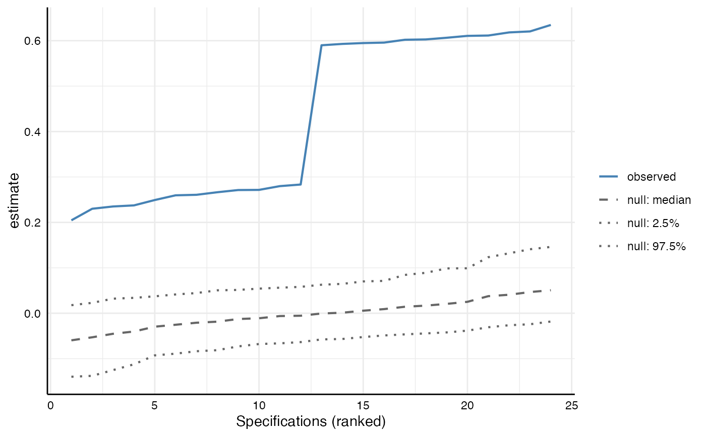

Tests how inconsistent the specification curve as a whole is
with the null hypothesis that the independent variable has no effect in any
of the specifications. Following Simonsohn, Simmons and Nelson (2020, section
"Inference with non-experimental data"), the function generates the
distribution of specification curves that would be expected under the null
by resampling data in which the null hypothesis is known to be true. The
resulting object of class specr.infer can be summarized with
summary() (test statistics and p-values) and plotted
with plot() (observed curve against the curves under the
null).
infer_curve(x, data, n_samples = 500, fast = TRUE, ...)A specr.object, resulting from running specr() (or the tibble
that specr() returns when it is given a tibble of specifications).
The data set that was used to fit the specifications, or the
specr.setup object created by setup() (whose data set is then used).
Number of bootstrap samples drawn under the null. Defaults to 500. Use at least 1,000 for results that are reported.
Logical value indicating whether specifications that were fitted
with lm should be refitted with a fast least-squares routine. It gives the
same estimates and p-values as lm(), which is checked against the observed
results for every specification before it is used. Set to FALSE to refit
all specifications with their original model function. Defaults to TRUE.
Further arguments passed to furrr::future_map(), e.g.
.progress = TRUE. The argument .options cannot be set, because the
resampling always uses furrr_options(seed = TRUE).
An object of class specr.infer, a list that includes the observed
curve (observed), the estimates and p-values under the null (estimates
and p_values; matrices with one row per bootstrap sample and one column per
specification), and technical information. Use
methods(class = "specr.infer") for an overview on available methods.
Procedure
For every specification k, the dependent variable is first modified so that
the null hypothesis is true by construction: \(y^*_k = y_k - b_k x_k\),
where \(b_k\) is the estimate observed in that specification. Then, in each
of n_samples bootstrap samples, N rows are drawn with replacement from the
data (N being the number of rows of data), and every specification is
refitted on these rows with \(y^*_k\) as its dependent variable. The same
rows are used for all specifications, which preserves the dependence between
them. Each specification keeps its own model, control variables, subset, and
additions to the formula, so that the curves under the null are based on
exactly the same specifications as the observed curve.
Requirements
Because the null is imposed by subtracting \(b_k x_k\) from the dependent
variable, the procedure is only valid for models that are linear in the
dependent variable (e.g., lm, lmer, or glm with a gaussian family and
identity link), for numeric independent and dependent variables, and for
unstandardized estimates. Before resampling, infer_curve() refits every
specification on the full data with \(y^*_k\) and stops if the estimate is
not zero, which catches models and extraction functions for which this does
not hold (e.g., logistic regression). Structural equation models (lavaan)
are not supported. Note that rows are resampled independently, which ignores
clustering (e.g., in multilevel data).
Interpretation
Joint inference across all specifications is only meaningful if the
specifications are genuinely equivalent, arbitrary alternatives (Del Giudice &
Gangestad, 2021). See vignette("inferences") for a discussion.
Parallelization
The bootstrap samples are distributed across workers if a parallel plan has
been set up front, e.g. future::plan(future::multisession, workers = 4).
Results are reproducible with set.seed() and identical whether they are
computed sequentially or in parallel. For more information, see
vignette("parallelization").
Simonsohn, U., Simmons, J.P. & Nelson, L.D. (2020). Specification curve analysis. Nature Human Behaviour, 4, 1208–1214. https://doi.org/10.1038/s41562-020-0912-z
Del Giudice, M., & Gangestad, S. W. (2021). A traveler’s guide to the multiverse: Promises, pitfalls, and a framework for the evaluation of analytic decisions. Advances in Methods and Practices in Psychological Science, 4(1). https://doi.org/10.1177/2515245920954925
summary.specr.infer() and plot.specr.infer() to investigate the results.
# Setup and run specification curve analysis
specs <- setup(data = example_data,
y = "y1",
x = c("x1", "x2"),
model = "lm",
controls = c("c1", "c2"),
subsets = list(group2 = c("female", "male")))
results <- specr(specs)
# Resample under the null (better 1,000 or more)
set.seed(42)
inference <- infer_curve(results, specs, n_samples = 200)
#> Warning: package ‘future’ was built under R version 4.4.3
#> Warning: package ‘purrr’ was built under R version 4.4.3
# Test statistics and p-values
summary(inference)
#> # A tibble: 3 × 6
#> statistic estimate null_lower null_upper p.value n_specs
#> <chr> <dbl> <dbl> <dbl> <dbl> <int>
#> 1 median 0.437 -0.0578 0.0606 0.00498 24
#> 2 share significant (positive) 24 0 9 0.00498 24
#> 3 aggregated z 45.6 -6.71 7.03 0.00498 24
# Observed curve against the curves under the null
plot(inference)

# For comparison: the same analysis after shuffling y1, which removes any
# effect of x1 and x2 in all specifications
shuffled <- example_data
shuffled$y1 <- sample(shuffled$y1)
specs_null <- setup(data = shuffled,
y = "y1",
x = c("x1", "x2"),
model = "lm",
controls = c("c1", "c2"),
subsets = list(group2 = c("female", "male")))
summary(infer_curve(specr(specs_null), specs_null, n_samples = 200))
#> # A tibble: 3 × 6
#> statistic estimate null_lower null_upper p.value n_specs
#> <chr> <dbl> <dbl> <dbl> <dbl> <int>
#> 1 median 0.0600 -0.0598 0.0757 0.0945 24
#> 2 share significant (positive) 5 0 10.0 0.134 24
#> 3 aggregated z 6.22 -5.96 8.22 0.0945 24